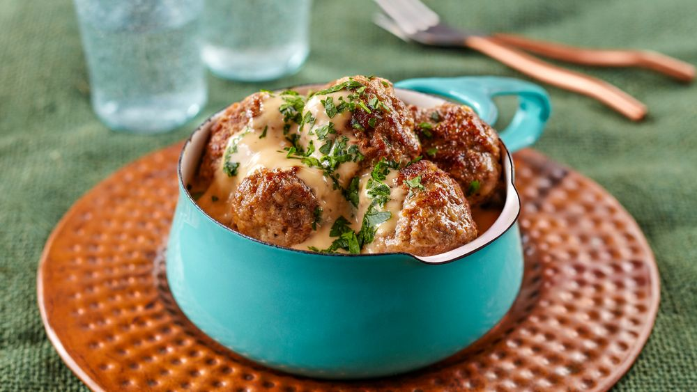

Viking Meatballs
Prep time: 6 minutes. Cook time: 25 minutes. Makes 6 servings.

Ingredients
- 1 lb (454 g) lean ground beef
- ½ lb (227 g) ground pork
- 1 lg egg
- ¾ C (60 g) panko
- 1 tsp (5 g) salt
- ½ tsp (1 g) pepper
- ¼ tsp (0.6 g) nutmeg
- ¼ tsp (0.5 g) ginger
- ⅛ tsp (0.6 g) allspice
- ½ C (118 ml) milk
- 1 C (201 g) yellow onion, minced
- ¼ C (10 g) fresh parsley, chopped
- 6 Tbsp (86 g) butter, divided
- ¼ C (31 g) flour
- 4 C (946 ml) low sodium chicken broth
- ¼ C (118 ml) red wine
Directions
- Combine beef, pork and egg in a large bowl
- make a well in the center and add breadcrumbs, salt, pepper, ginger,
- allspice and milk;
- let stand 2 minutes.
- Add onion and parsley and mix together with your hands until completely incorporated;
- form into 1-inch (2.5-cm) balls.
- Place 2 T (29 g) butter in a large skillet over medium high, and
- working in batches, brown meatballs on all sides until cooked through, about 8 minutes per batch.
- Transfer to a serving bowl; cover loosely to keep warm.
- Reduce heat to medium, place remaining butter in skillet, add flour and stir to form a thick paste.
- Cook, stirring constantly, 2 minutes;
- then whisk in broth and wine.
- Bring to a boil, reduce heat;
- simmer until thickened, about 7 minutes.
- Pour over meatballs, tossing to coat.
- Serve immediately.
Return to Homepage